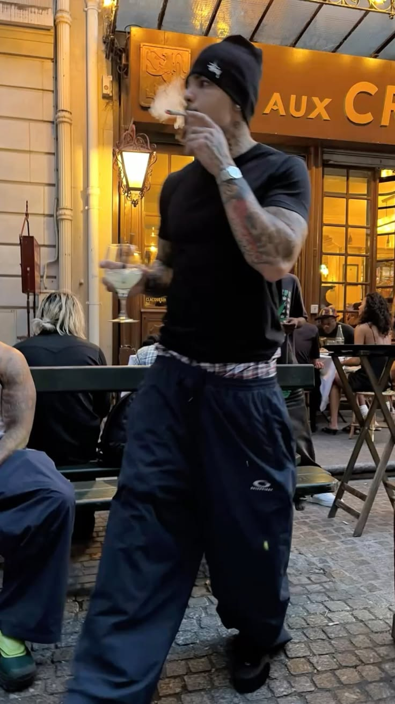

Séoul dicte le cool
Il fut un temps où le style venait de Paris, Milan ou New York. Aujourd'hui, une partie du monde regarde ailleurs. Séoul s'est imposée comme la nouvelle boussole du cool. Mais derrière les vêtements, les coupes de cheveux et les vitrines ultramodernes se cache une histoire bien plus grande : celle d'un petit pays qui a décidé de conquérir le monde par l'image, et qui a réussi.

Une capitale devenue référence
Pendant des décennies, la Corée a suivi les tendances venues d'ailleurs. Elle importait le goût, les marques, les codes, comme un élève appliqué qui regarde les grands. Puis, lentement, elle a cessé de suivre pour commencer à inventer. Séoul ne copie plus les capitales de la mode, elle les inspire. Ses rues, ses créateurs, sa jeunesse sont devenus un modèle exporté aux quatre coins de la planète.
Ce basculement n'est pas tombé du ciel. Il s'appuie sur une vague culturelle d'une ampleur inédite : la musique qui remplit les stades du monde entier, les séries dévorées sur tous les continents, une industrie de la beauté qui dicte les routines de millions de gens, un cinéma primé dans les plus grands festivals. Quand un pays entier devient désirable, son style le devient aussi. La mode n'est que la partie visible d'un phénomène beaucoup plus profond.
Il faut mesurer le chemin parcouru. Il y a une génération à peine, la Corée du Sud était surtout connue pour ses usines, ses voitures et ses téléphones. Aujourd'hui, elle vend aussi du rêve, de l'imaginaire, du désir. C'est un renversement spectaculaire : passer du statut d'atelier du monde à celui de prescripteur de goût mondial.
Un style qui ne connaît pas les règles
La mode coréenne fascine parce qu'elle mélange tout sans complexe : le minimalisme le plus pur et l'excès le plus assumé, le streetwear et le classique, le masculin et le féminin, le luxe et la pièce bon marché. Elle ose des associations que l'Occident jugerait risquées, et c'est exactement ce qui la rend irrésistible.
Cette liberté vient d'un rapport différent aux codes. Là où la mode européenne traîne des siècles d'histoire et de hiérarchies, la Corée avance avec une forme d'audace neuve, moins encombrée de traditions. Elle peut tout essayer, tout croiser, parce qu'elle n'a rien à prouver et tout à inventer.
La machine culturelle
Derrière l'image cool, il y a une organisation redoutable. L'industrie culturelle coréenne est l'une des plus structurées du monde : formation intensive des artistes, maîtrise totale de l'image, contrôle minutieux de la diffusion. Rien n'est laissé au hasard, tout est pensé, calibré, optimisé pour conquérir un public mondial.
Cette rigueur explique en partie le succès. Là où d'autres industries misent sur la chance et l'inspiration, la Corée a industrialisé la fabrication du désir. Elle ne produit pas des stars par accident, elle les conçoit comme on conçoit un produit : avec méthode. Chaque détail, du vêtement au geste, est pensé pour plaire, se partager et se graver dans les mémoires.
Et la mode profite directement de cette machine. Habiller une star coréenne, c'est toucher instantanément des millions de fans à travers le monde. Les grandes maisons l'ont compris et se disputent ces visages, devenus parmi les plus influents de la planète.
La rue comme laboratoire
Mais le vrai moteur n'est pas seulement dans les studios : il est sur les trottoirs. Dans les quartiers de Séoul, la rue est un défilé permanent. Les jeunes y expérimentent, osent, se photographient, se commentent, et donnent le tempo à toute une planète. La vraie mode coréenne ne naît pas dans les boutiques, elle naît dehors.
Cette énergie venue d'en bas est contagieuse. Elle se diffuse par les images, se répand sur les réseaux, et finit par atterrir dans les collections du monde entier. Ce que porte un étudiant de Séoul un matin peut devenir, quelques mois plus tard, une tendance mondiale. Séoul a fait de sa jeunesse son plus beau laboratoire, et de ses rues son plus grand podium.
L'économie derrière le cool
Il serait naïf de croire que tout cela n'est qu'affaire de goût. Derrière le cool coréen, il y a des milliards. L'industrie du divertissement est devenue l'un des piliers de l'économie du pays, au même titre que l'électronique ou l'automobile. La culture n'est plus un supplément d'âme : c'est une exportation stratégique, suivie et chiffrée comme n'importe quelle autre.
Cette logique irrigue toute la chaîne. Une série à succès vend des vêtements, des cosmétiques, du tourisme, une image de marque nationale. Un pays qui fait rêver vend tout ce qu'il touche. La Corée a compris que la séduction était le meilleur des commerces, et elle a bâti une économie entière sur cette idée.
Le rapport de force inversé
Ce qui se joue là est historique. Pendant des siècles, l'Occident a exporté son goût vers le reste du monde, imposant ses canons, ses marques, sa définition de l'élégance. Aujourd'hui, le courant s'inverse : c'est l'Asie qui dicte une partie du cool mondial.
Les grandes maisons occidentales ne se contentent plus de vendre en Corée, elles viennent y chercher l'inspiration, y organisent leurs défilés, y recrutent leurs égéries. Séoul n'est plus un marché à conquérir, c'est une source à courtiser. Un basculement discret, mais profond, dont la mode n'est que le symptôme le plus éclatant.
Et maintenant ?
La question qui reste est celle de la durée. Une mode, par définition, finit par passer. Le cool coréen restera-t-il au sommet, ou n'est-il qu'une vague de plus dans l'histoire des influences ? Personne ne peut le dire avec certitude. Mais une chose est sûre : même quand le projecteur se déplacera, la Corée aura prouvé quelque chose d'essentiel.
Elle aura montré qu'un pays n'a pas besoin d'être le plus grand ni le plus puissant pour imposer son goût au monde. Il lui suffit de faire rêver. Et dans une époque où l'image vaut de l'or, c'est peut-être la plus grande des forces. Séoul n'a pas seulement conquis la mode : elle a rappelé que la culture est l'arme la plus douce et la plus durable qui soit.
Le cool a longtemps parlé français ou anglais. Aujourd'hui, il a aussi un accent coréen.